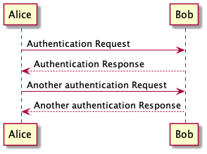

Sphinx / Jupyter Book Diagramming Plugins¶
Several Sphinx plugins exist that can be used to generate diagrams from simple text descriptions wrapped in appropriately labeled fenced code blocks.
For example:
mgaitan/sphinxcontrib-mermaid: a wide range of diagram types rendered usingmermaid.js;bavovanachte/sphinx-wavedrom: timing diagrams rendered usingwavedrom;sphinx-contrib/plantuml: a wide range of diagram types rendered using the PlantUML Java package;sphinx-contrib/tikz: renderer for LaTeX/tikzdiagram scripts;blockdiag/sphinxcontrib-blockdiag: renderer forblockdiagdiagrams.
In many cases, Jupyter notebook extensions also exist that provide magics that can render equivalent scripts in block magicked cells to render corresponding diagrams as part of the magicked cell output.
After installing the packages from PyPi, these extensions are enabled in a Jupyter Book workflow by adding the following sort of configuration data to the _config.yml file:
sphinx:
extra_extensions:
- sphinxcontrib.mermaid
- sphinxcontrib.wavedrom
- sphinxcontrib.plantuml
- sphinxcontrib.tikz
- sphinxcontrib.blockdiag
On inspection of the source document, the following diagram (as rendered by Jupyter Book) is actually a markdown cell containing a {mermaid} labeled fenced code block and appropriate diagram source script:
On inspection of the source document, the following diagram (as rendered by Jupyter Book) is actually a markdown cell containing a {wavedrom} labeled fenced code block and appropriate diagram source script:
On inspection of the source document, the following diagram (as rendered by Jupyter Book) is actually a markdown cell containing a {uml} (PlantUML) labeled fenced code block and appropriate diagram source script:

On inspection of the source document, the following diagram (as rendered by Jupyter Book) is actually a markdown cell containing a {tikz} labeled fenced code block and appropriate diagram source script:
On inspection of the source document, the following diagram (as rendered by Jupyter Book) is actually a markdown cell containing a {blockdiag} labeled fenced code block and appropriate diagram source script: